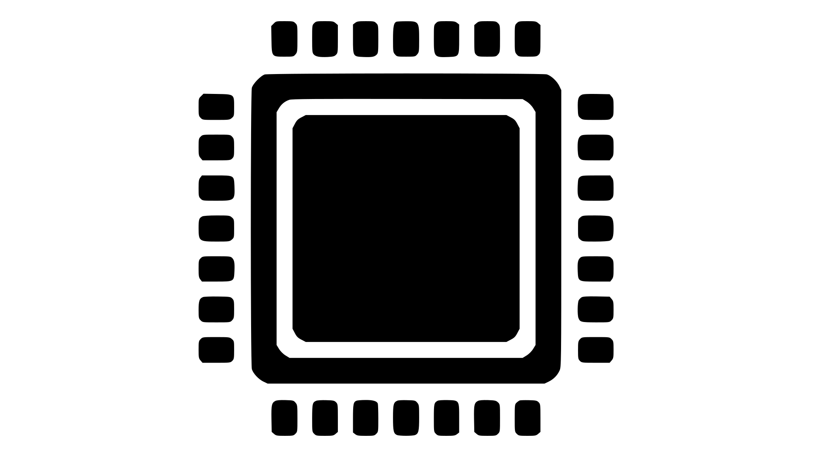

Selaptop
CPU: Central Processing Unit
The CPU, often referred to simply as the processor, is essential to the functionality of a computer. The CPU has two subsystems, one which is responsible for controlling when processes run, and another to make logical and arithmetic computations. Many people like to think of the CPU as the “brain” of the computer.
There are many different aspects to consider when deciding on a CPU. If you are interested in learning about all these aspects, check out this article. However, the most important feature of a CPU is it's frequency, or the speed at which it runs. Frequency is measured in hertz (Hz). Generally, a higher frequency means better performance, but this is not always the case. Due to the complexity of the CPU, it can be hard to choose the right one just by looking at it's specifications.
Below is a simple method to help you find a laptop with a CPU that fits your needs:
Step 1: To the best of your ability, pick the most complex program you use (e.g. Photoshop or current major games)
Step 2: In Google search for “{Application Name} minimum specifications. Take note of the details listed under CPU or Processor
Step 3: In Google search “Laptops with {details from step 2} CPU
Any laptop you find with a CPU that matches or exceeds the details from step 2 will be satisfactory
Additional Note: Some CPUs integrate the GPU so that they are one component. This is covered further in the GPU section.